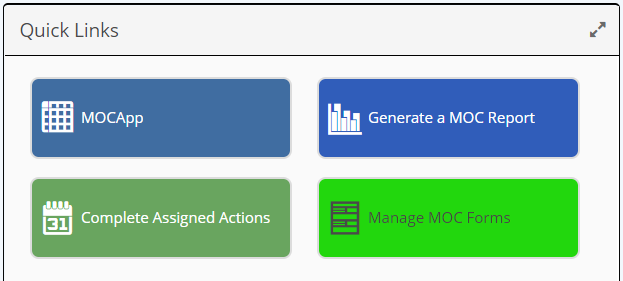

A Quick Links panel contains a set of links that you can use to easily access system functions or to navigate to external links.

On a mobile device, the first six links will be displayed. Click to expand the panel, and scroll to see more links.
Quick Links also allow navigation from the Portal to other Apps in online or offline mode. See Working Offline with Inspections.
You can also navigate to other external URLs that are available in the cache.